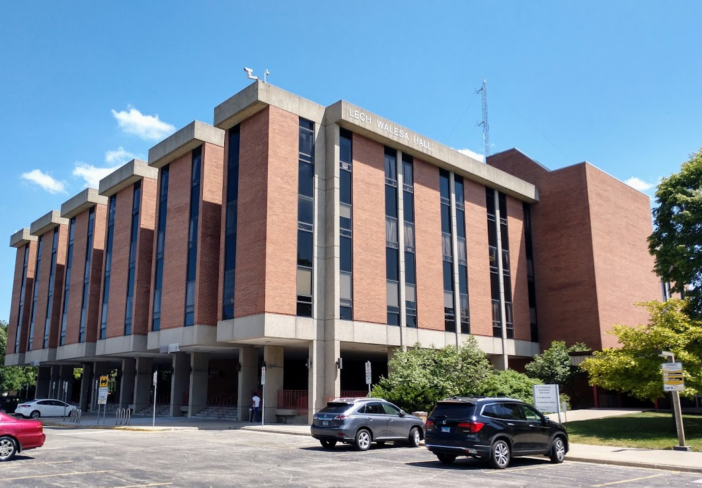

	<!DOCTYPE html>
		<html>
			<head>
        
		<title>Midterm 2023</title>

         <link rel="stylesheet" href="https://unpkg.com/leaflet@1.9.4/dist/leaflet.css"
           integrity="sha256-p4NxAoJBhIIN+hmNHrzRCf9tD/miZyoHS5obTRR9BMY="
           crossorigin=""/>

         <script src="https://unpkg.com/leaflet@1.9.4/dist/leaflet.js"
           integrity="sha256-20nQCchB9co0qIjJZRGuk2/Z9VM+kNiyxNV1lvTlZBo="
           crossorigin=""></script>
		   
		   <head>
			
		<body>
		
			<div id="map" style="height: 500px"></div>

			<script type="text/javascript">

          var map = L.map('map', {
              center: [41.9796171, -87.7198131],
              zoom: 8
          });

			var Esri_WorldImagery = L.tileLayer('https://server.arcgisonline.com/ArcGIS/rest/services/World_Imagery/MapServer/tile/{z}/{y}/{x}', 
			{attribution: 'Tiles &copy; Esri &mdash; Source: Esri, i-cubed, USDA, USGS, AEX, GeoEye, Getmapping, Aerogrid, IGN, IGP, UPR-EGP, and the GIS User Community',
			
			
            maxZoom: 16,
            minZoom: 16
			}).addTo(map);
			
		var universityIcon = L.icon({
			iconUrl: 'location(1).png', // url that links to the icon image file
			iconSize:     [20, 20], // size of the icon image in pixels
			iconAnchor:   [19, 19], // the top left corner of the icon will be aligned so that this point is at the marker's geographical location
			popupAnchor:  [0, -10] // point from which the popup should open, relative to the iconAnchor
		});
			
		var marker1 = L.marker([41.9781114,-87.7173412], {icon: universityIcon}).addTo(map);
		var marker2 = L.marker([41.9810621,-87.718457], {icon: universityIcon}).addTo(map);
		var marker3 = L.marker ([ 41.9803843,-87.718749], {icon: universityIcon}).addTo(map);
		var marker4 = L.marker ([ 41.9805547,-87.7169660], {icon: universityIcon}).addTo(map);
		var marker5 = L.marker ([ 41.9812438,-87.7164432], {icon: universityIcon}).addTo(map);
		var marker6 = L.marker ([ 41.9818631,-87.7173369], {icon: universityIcon}).addTo(map);
		var marker7 = L.marker ([ 41.9826376,-87.7185478], {icon: universityIcon}).addTo(map);
		var pic1 = '';
		var pic2 = '';
		var pic3 = '';
		var pic4 = '';
		var pic5 = '';
		var pic6 = '';
		var pic7 = '';
		marker1.bindPopup('<p style="color:black; font-weight:bold"> PE Complex </p>' + pic1);
		marker2.bindPopup('<p style="color:blue; font-weight:bold"> Student Union</p>' + pic2);
		marker3.bindPopup('<p style="color:blue; font-weight:bold"> Ronald Williams Library</p>' + pic3);
		marker4.bindPopup('<p style="color:blue; font-weight:bold"> BBH</p>' + pic4);
		marker5.bindPopup('<p style="color:black; font-weight:bold"> Business Building B</p>' + pic5);
		marker6.bindPopup('<p style="color:blue; font-weight:bold"> Sachs Administration Building</p>' + pic6);
		marker7.bindPopup('<p style="color:blue; font-weight:bold"> Lech Walesa Hall</p>' + pic7);


        </script>
   </body>
</html>